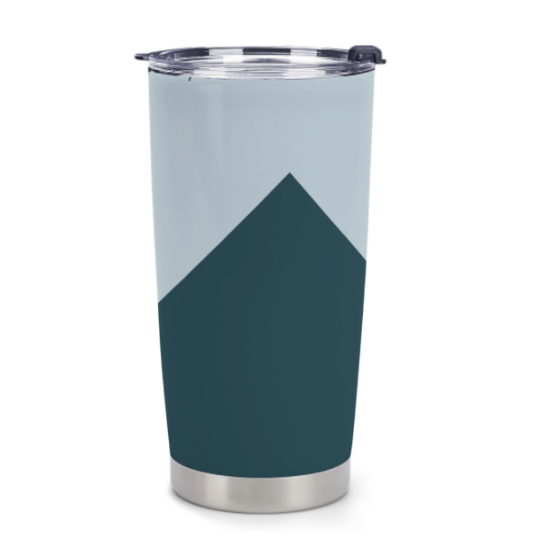
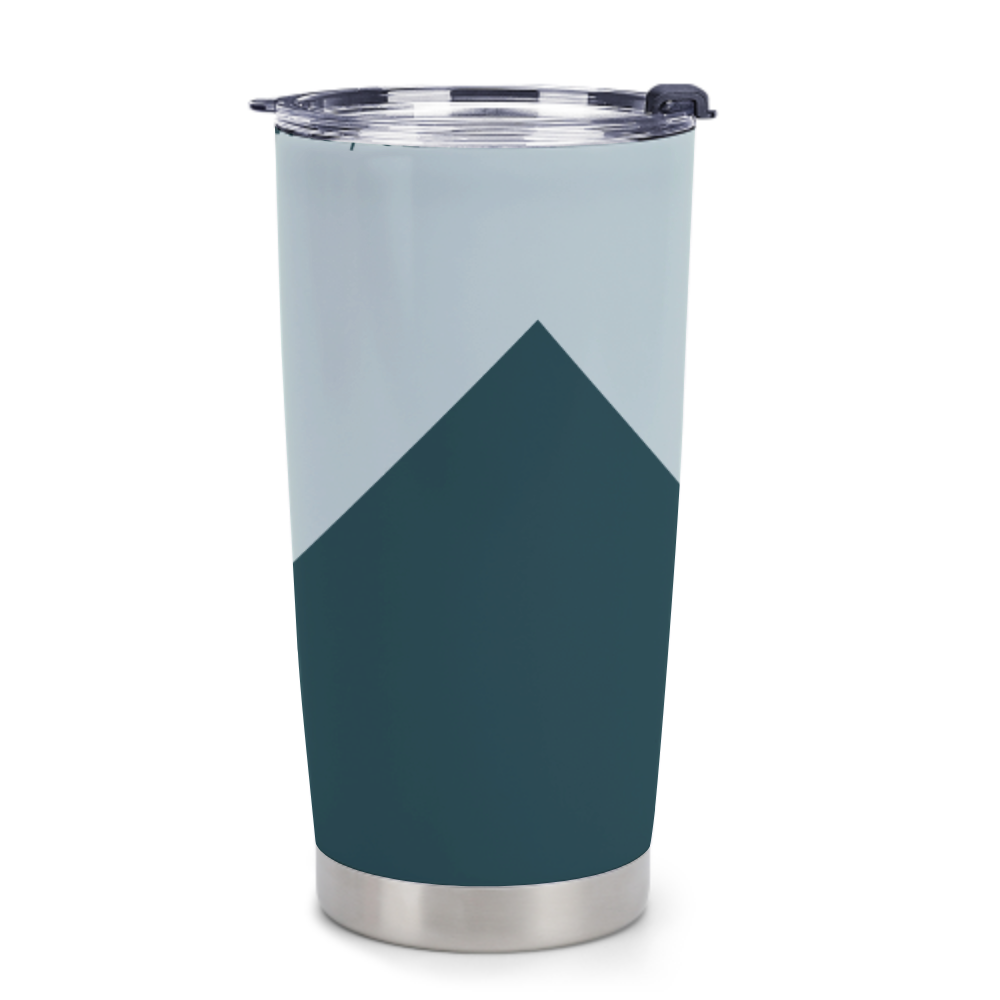
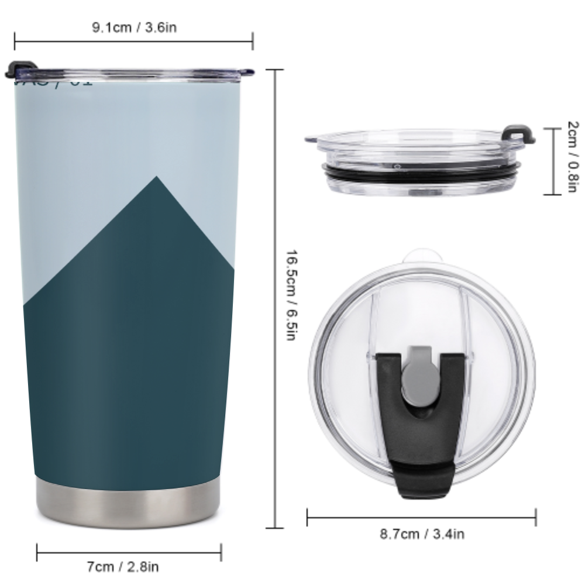
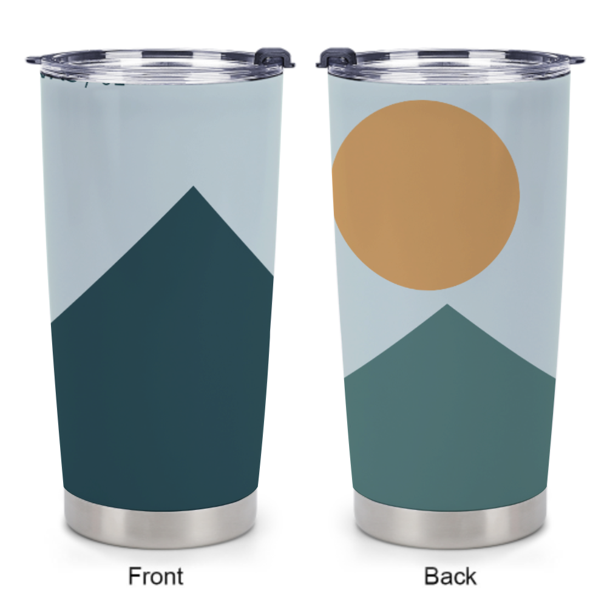
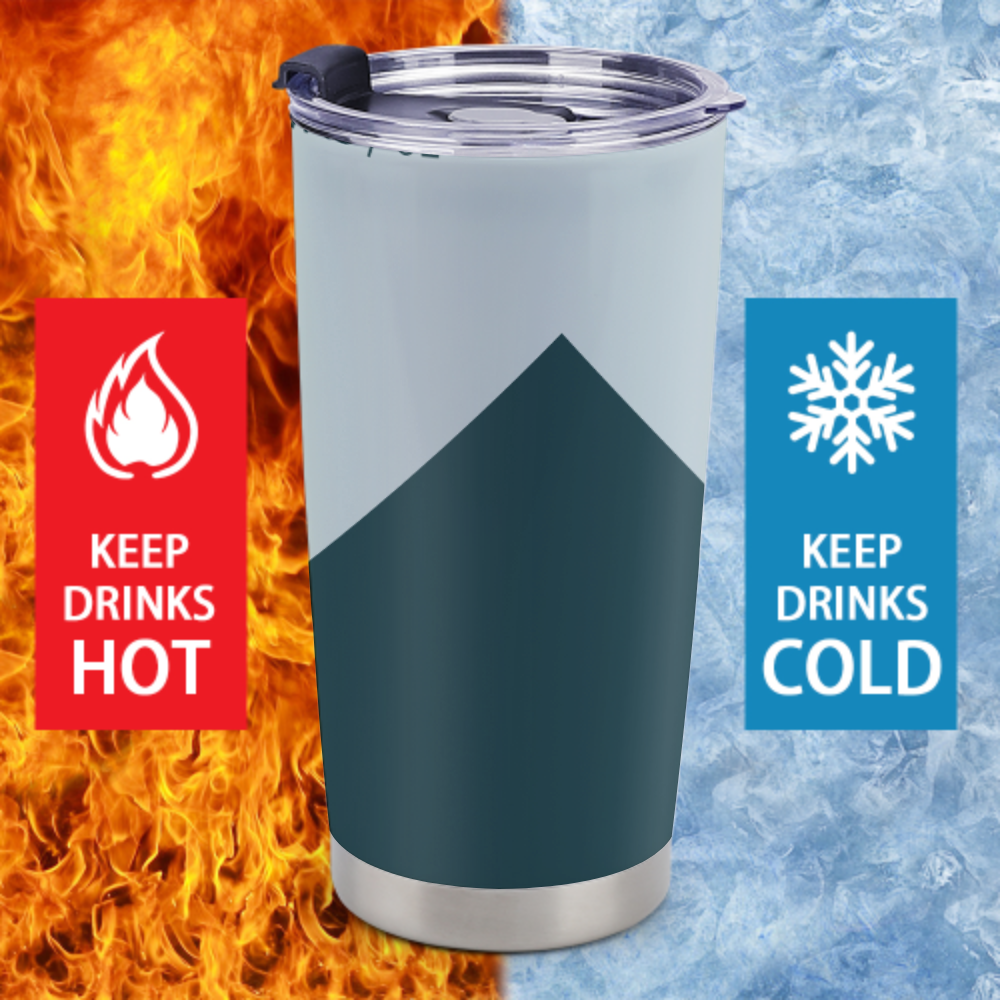
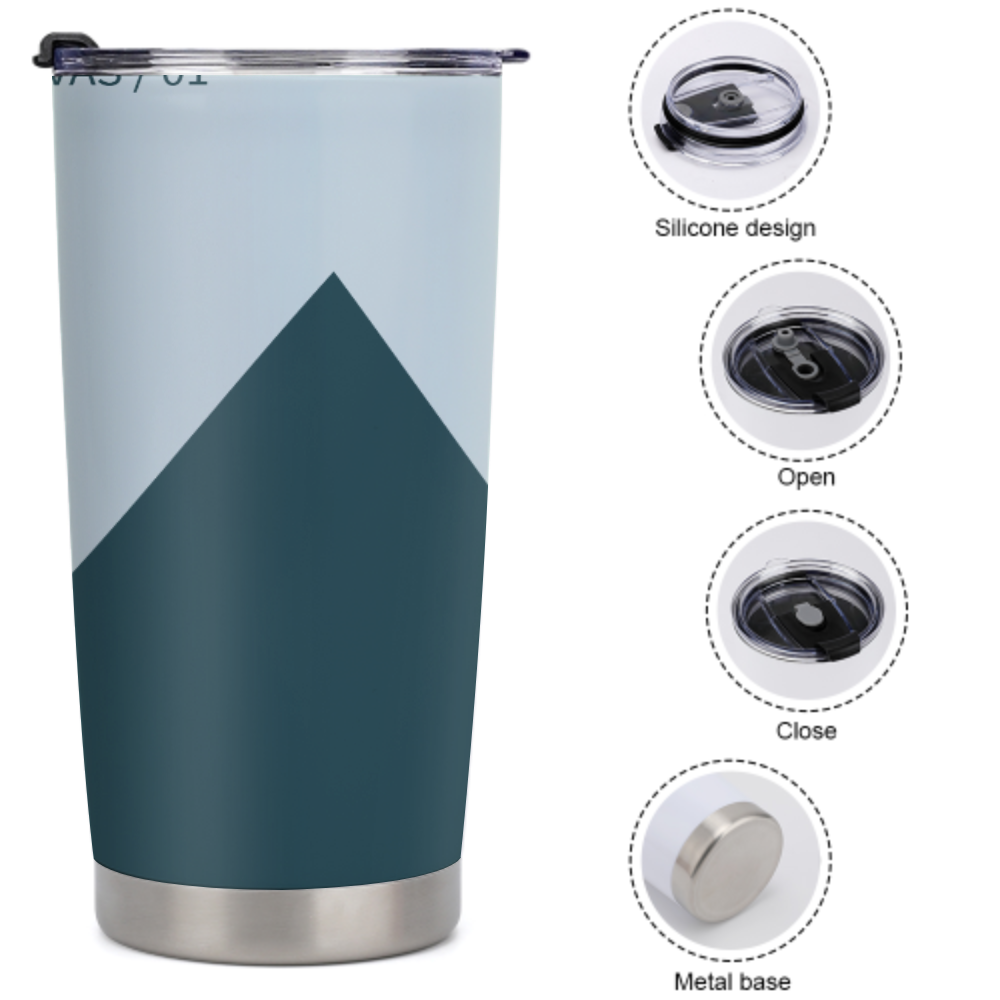
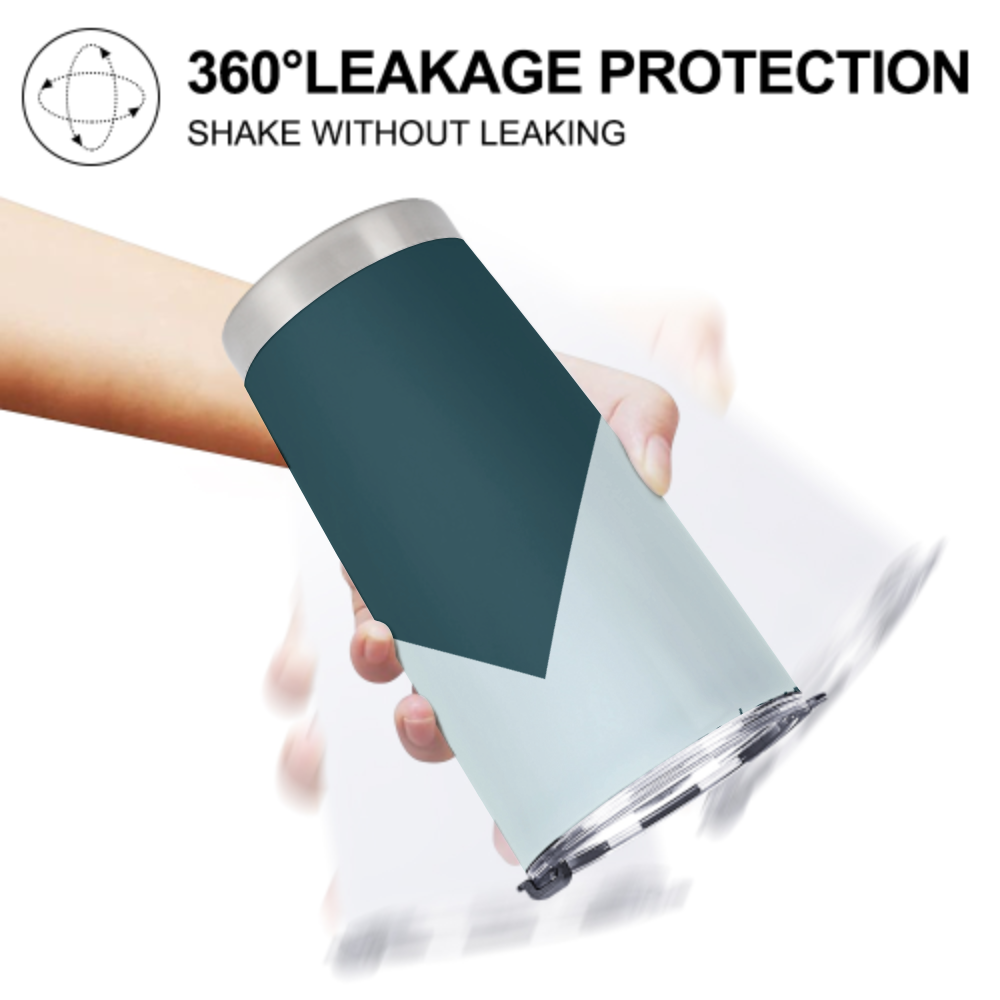
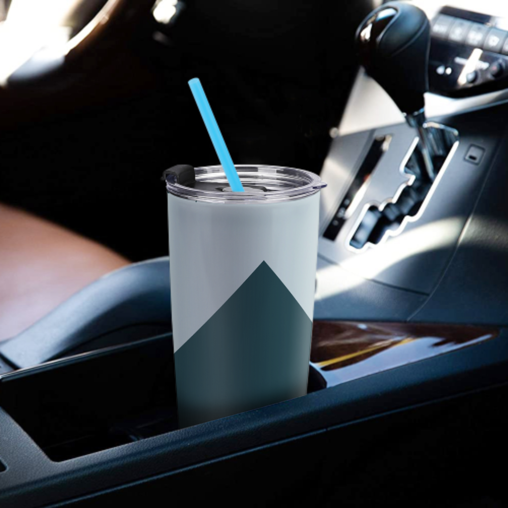
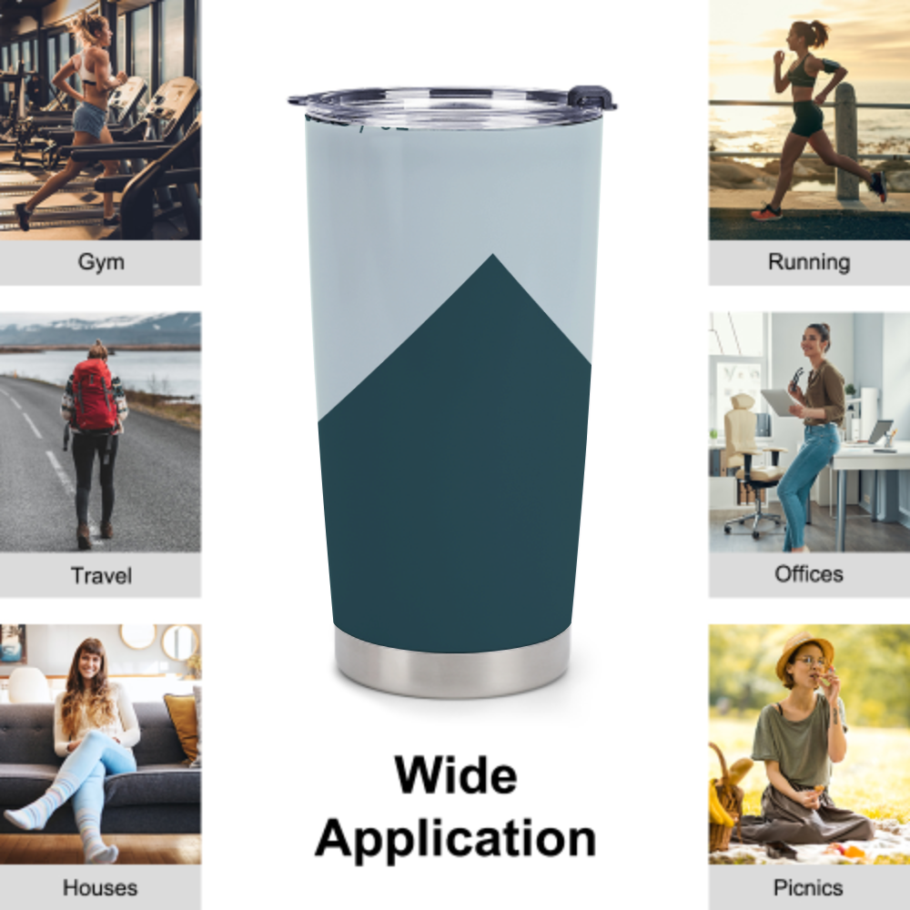

QC1104087 · 20oz保温杯
8个聚鼎原始模板，保留杯身曲面、杯盖、金属底座、高光与阴影。主图使用相同素材进行原站对照；其余7个模板已本地渲染检查，尚未逐个与原站截图对照。输出为商品效果图，不是生产打印文件。模板宣传文案沿用原图，不代表性能已独立验证。
返回工作台
主图对照
聚鼎原站
本地合成
全部8个模板
01 · 白底主图02 · 尺寸与杯盖
03 · 正反面
04 · 冷热说明
05 · 杯盖细节
06 · 手持展示
07 · 车载场景
08 · 多用途场景